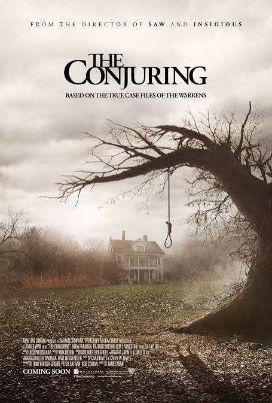

Ed Warren
Interpretado por Patrick Wilson
Investigador paranormal que, junto con su esposa, intenta comprender los fenómenos que ocurren en la casa de los Perron. Es presentado como una persona decidida y protectora.

TERROR · SOBRENATURAL · PARANORMAL
Una familia se muda a una antigua casa de campo y comienza a experimentar sucesos aterradores e inexplicables. Desesperados por encontrar respuestas, solicitan la ayuda de los investigadores paranormales Ed y Lorraine Warren.
The Conjuring
El conjuro
2013
James Wan
Chad Hayes y Carey W. Hayes
Estados Unidos
112 minutos
Terror sobrenatural
Vera Farmiga, Patrick Wilson, Lili Taylor y Ron Livingston
Joseph Bishara
En 1971, Roger y Carolyn Perron se mudan junto con sus cinco hijas a una antigua casa de campo en Rhode Island, Estados Unidos. La familia espera comenzar una nueva etapa de su vida, pero pronto descubre que algo extraño sucede dentro de la vivienda.
Al principio ocurren pequeños acontecimientos inexplicables, como ruidos, movimientos de objetos y sensaciones de una presencia desconocida. Sin embargo, los fenómenos se vuelven cada vez más intensos y aterradores.
Carolyn decide buscar ayuda y contacta a Ed y Lorraine Warren, dos investigadores paranormales que estudian supuestos casos de actividad sobrenatural. Al visitar la propiedad, los Warren consideran que la familia podría estar enfrentándose a una presencia peligrosa.
Mientras investigan la historia de la casa, descubren relatos inquietantes relacionados con antiguos habitantes de la propiedad. La tensión aumenta cuando la presencia comienza a afectar directamente a los miembros de la familia.
La película desarrolla una historia de miedo, misterio y suspenso, utilizando sonidos, sombras y apariciones para mantener al espectador en constante tensión. Aunque está inspirada en afirmaciones de los Warren y la familia Perron, los sucesos sobrenaturales no están comprobados como hechos reales.
Interpretado por Patrick Wilson
Investigador paranormal que, junto con su esposa, intenta comprender los fenómenos que ocurren en la casa de los Perron. Es presentado como una persona decidida y protectora.
Interpretada por Vera Farmiga
Investigadora paranormal que afirma tener capacidades de percepción extrasensorial. Dentro de la historia, utiliza esas habilidades para identificar la amenaza que enfrenta la familia.
Interpretada por Lili Taylor
Madre de familia que comienza a experimentar acontecimientos aterradores en su nuevo hogar. Busca proteger a sus hijas y descubrir el origen de los sucesos.
Interpretado por Ron Livingston
Padre de la familia Perron. Intenta mantener la seguridad de su esposa e hijas mientras los fenómenos paranormales se intensifican.
Andrea, Nancy, Christine, Cindy y April
Cinco hermanas que viven junto a sus padres en la antigua casa. Experimentan distintos sucesos inquietantes que aumentan el miedo de la familia.
Presencia sobrenatural dentro de la historia
Figura relacionada con los acontecimientos terroríficos de la casa. En la película representa una amenaza para la familia y es fundamental para el conflicto central.
El conjuro pertenece al subgénero narrativo de terror porque presenta fenómenos sobrenaturales, ambientes oscuros, situaciones de peligro y acontecimientos inexplicables que buscan provocar miedo en el espectador. La película utiliza especialmente el suspenso y la incertidumbre para construir una atmósfera inquietante.
Ahora conoceremos un inquietante cuento de Horacio Quiroga donde una enfermedad misteriosa esconde un secreto aterrador.